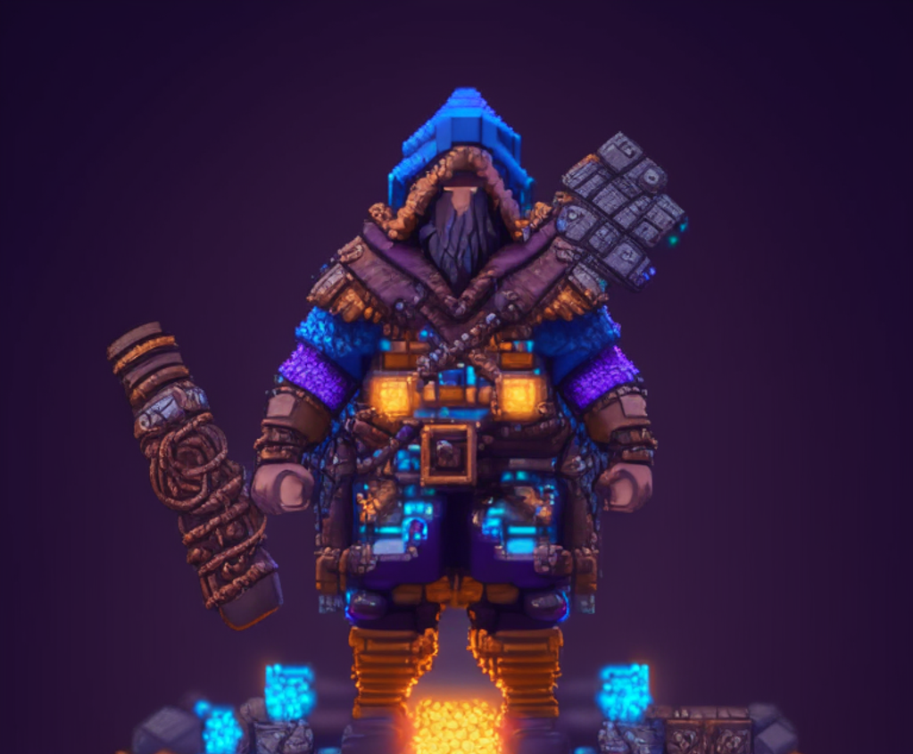
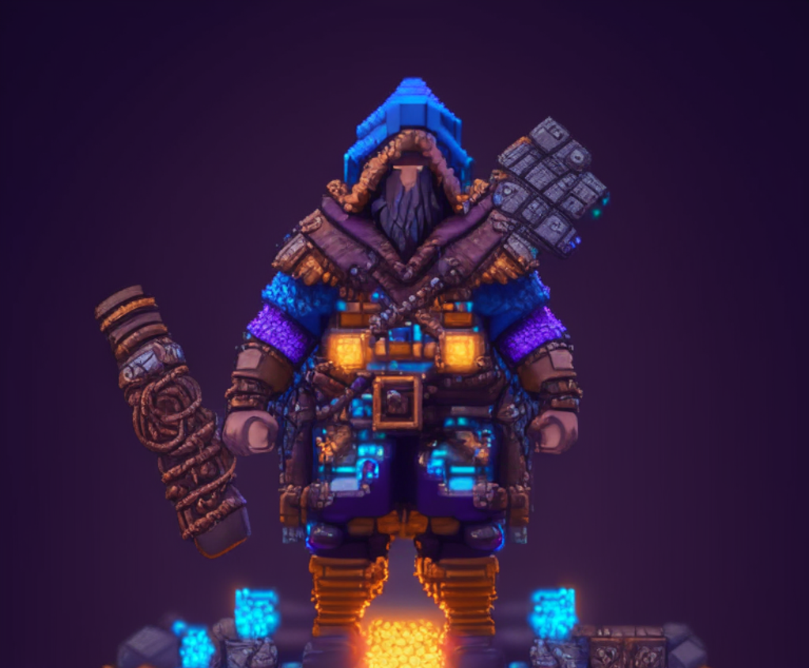

La inteligencia artificial tiene el potencial de revolucionar la creación de contenidos en las redes sociales, ofreciendo oportunidades para mejorar la eficiencia, la personalización y la moderación. Sin embargo, también presenta riesgos significativos en términos de desinformación, filtros burbuja y pérdida de autenticidad.
Elon Musk , dice que " no es imposible que la IA llegue a controlar a la humanidad, ademas de hablar acerca de los riesgos que esta puede llegar a causar.".
Mark Zuckerberg Ceo de Meta, dice que "la IA podria tener grandes beneficios a la hora de usar su plataforma ademas de tener impactos positivos en ella".

Bill Gates , dice que " la IA cambiará la forma en que las personas trabajan, aprenden, viajan, obtienen atención médica y se comunican entre sí".
¿Estamos ante una era dorada digital o amenaza el apocalipsis robot? Se necesitan y se buscan estándares éticos para tratar con la inteligencia artificial. Y la respuesta a la pregunta: ¿Qué nos hace únicos a los seres humanos... todavía?
Video Originbal de: DW Documental
Canal de Youtube: https://www.youtube.com/@DWDocumental
created with
Website Builder Software .